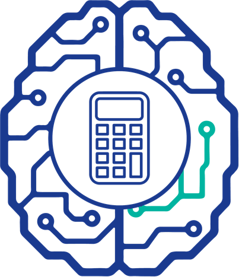

MITOS FISCALES · 0
✕
Lo que se dice:
«Frase del mito, literal.»
Lo exacto:
texto literal de «Lo exacto» de la fuente sellada.
Guárdalo
Fuente: norma y artículo, literal.
Información general y educativa. Para tu caso, consulta a tu contador.